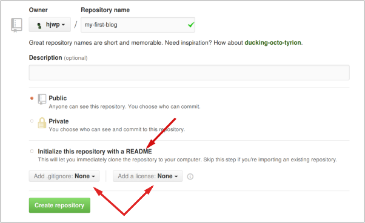

Share code
Until now, your code was only available on your computer. Now you will learn how to share it and make it available for others to access and use.
Git
Note If you already did the installation steps, there's no need to do this again – you can skip to the next section and start creating your Git repository.
Git is a "version control system" used by a lot of programmers. This software can track changes to files over time so that you can recall specific versions later. A bit like the "track changes" feature in word processor programs (e.g., Microsoft Word or LibreOffice Writer), but much more powerful.
Installing Git
You can download Git from git-scm.com. You can hit "next" on all steps except for two: in the step where it asks to choose your editor, you should pick Nano, and in the step entitled "Adjusting your PATH environment", choose "Use Git and optional Unix tools from the Windows Command Prompt" (the bottom option). Other than that, the defaults are fine. Checkout Windows-style, commit Unix-style line endings is good.
During installation, if you are presented with the option of "Adjusting the name of the initial branch in new repositories", please choose to "Override the default" and use "main". This will align your installation of Git with the broad direction of the global developer community, and the "main" branch will be used through the remainder of this tutorial. Please see https://sfconservancy.org/news/2020/jun/23/gitbranchname/ and https://github.com/github/renaming for further discussion of this subject.
Do not forget to restart the command prompt or PowerShell after the installation finished successfully.
Download Git from git-scm.com and follow the instructions.
During installation, if you are presented with the option of "Adjusting the name of the initial branch in new repositories", please choose to "Override the default" and use "main". This will align your installation of Git with the broad direction of the global developer community, and the "main" branch will be used through the remainder of this tutorial. Please see https://sfconservancy.org/news/2020/jun/23/gitbranchname/ and https://github.com/github/renaming for further discussion of this subject.
Note If you are running OS X 10.6, 10.7, or 10.8, you will need to install the version of git from here: Git installer for OS X Snow Leopard
command-line
$ sudo apt install git
Adjusting your default branch name
This will align your installation of Git with the broad direction of the global developer community, and the "main" branch will be used through the remainder of this tutorial. Please see https://sfconservancy.org/news/2020/jun/23/gitbranchname/ and https://github.com/github/renaming for further discussion of this subject.
command-line
$ git config --global --add init.defaultBranch main
command-line
$ sudo dnf install git
Adjusting your default branch name
This will align your installation of Git with the broad direction of the global developer community, and the "main" branch will be used through the remainder of this tutorial. Please see https://sfconservancy.org/news/2020/jun/23/gitbranchname/ and https://github.com/github/renaming for further discussion of this subject.
command-line
$ git config --global --add init.defaultBranch main
command-line
$ sudo zypper install git
Adjusting your default branch name
This will align your installation of Git with the broad direction of the global developer community, and the "main" branch will be used through the remainder of this tutorial. Please see https://sfconservancy.org/news/2020/jun/23/gitbranchname/ and https://github.com/github/renaming for further discussion of this subject.
command-line
$ git config --global --add init.defaultBranch main
Starting our Git repository
Git tracks changes to a particular set of files in what's called a code repository (or "repo" for short). Let's start one for our project. Open up your console and run these commands, in the django-tutorial directory:
Note Check your current working directory with a
pwd(Mac OS X/Linux) orcd(Windows) command before initializing the repository. You should be in thedjango-tutorialfolder.
command-line
$ git init
Initialized empty Git repository in ~/django-tutorial/.git/
$ git config --global user.name "Your Name"
$ git config --global user.email you@example.com
Initializing the git repository is something we need to do only once per project (and you won't have to re-enter the username and email ever again).
Adjusting your branch name
If the version of Git that you are using is older than 2.28, you will need to change the name of your branch to "main". To determine the version of Git, please enter the following command:
command-line
$ git --version
git version 2.xx...
Only if the second number of the version, shown as "xx" above, is less than 28, will you need to enter the following command to rename your branch. If it is 28 or higher, please continue to "Ignoring files". As in "Initializing", this is something we need to do only once per project, as well as only when your version of Git is less than 2.28:
command-line
$ git branch -M main
Ignoring files
Git will track changes to all the files and folders in this directory, but there are some files we want it to ignore. We do this by creating a file called .gitignore in the base directory. Open up your editor and create a new file with the following contents:
.gitignore
# Python
*.pyc
*~
__pycache__
# Env
.env
myvenv/
venv/
# Database
db.sqlite3
# Static folder at project root
/static/
# macOS
._*
.DS_Store
.fseventsd
.Spotlight-V100
# Windows
Thumbs.db*
ehthumbs*.db
[Dd]esktop.ini
$RECYCLE.BIN/
# Visual Studio
.vscode/
.history/
*.code-workspace
And save it as .gitignore in the "django-tutorial" folder.
Note The dot at the beginning of the file name is important! If you're having any difficulty creating it (Macs don't like you to create files that begin with a dot via the Finder, for example), then use the "Save As" feature in your editor; it's bulletproof. And be sure not to add
.txt,.py, or any other extension to the file name -- it will only be recognized by Git if the name is just.gitignore. Linux and MacOS treat files with a name that starts with.(such as.gitignore) as hidden and the normallscommand won't show these files. Instead usels -ato see the.gitignorefile.Note One of the files you specified in your
.gitignorefile isdb.sqlite3. That file is your local database, where all of your users and posts are stored. We'll follow standard web programming practice, meaning that we'll use separate databases for your local testing site and your live website on PythonAnywhere. The PythonAnywhere database could be SQLite, like your development machine, but usually you will use one called MySQL which can deal with a lot more site visitors than SQLite. Either way, by ignoring your SQLite database for the GitHub copy, it means that all of the posts and superuser you created so far are going to only be available locally, and you'll have to create new ones on production. You should think of your local database as a good playground where you can test different things and not be afraid that you're going to delete your real posts from your blog.
It's a good idea to use a git status command before git add or whenever you find yourself unsure of what has changed. This will help prevent any surprises from happening, such as wrong files being added or committed. The git status command returns information about any untracked/modified/staged files, the branch status, and much more. The output should be similar to the following:
command-line
$ git status
On branch main
No commits yet
Untracked files:
(use "git add <file>..." to include in what will be committed)
.gitignore
blog/
manage.py
mysite/
requirements.txt
nothing added to commit but untracked files present (use "git add" to track)
And finally we save our changes. Go to your console and run these commands:
command-line
$ git add .
$ git commit -m "My Django Girls app, first commit"
[...]
13 files changed, 200 insertions(+)
create mode 100644 .gitignore
[...]
create mode 100644 mysite/wsgi.py
Pushing your code to GitHub
Go to GitHub.com and sign up for a new, free user account. (If you already did that in the workshop prep, that is great!) Be sure to remember your password (add it to your password manager, if you use one).
To make pushing and pulling code from Github more seamless, it is highly recommended to setup SSH keys on your local computer and associate them with your Github account. This allows your computer to identify itself to Github and authenticate that it is you without requiring your Github username and password every time.
To do this, follow Github's instructions for your operating system for:
The steps below assume that you have done this - if you do not do this, then you will need to use https:// URLs instead of git@ URLs and enter your username and password when pushing to Github.
Then, create a new repository, giving it the name "my-first-blog". Leave the "initialize with a README" checkbox unchecked, leave the .gitignore option blank (we've done that manually) and leave the License as None.

Note The name
my-first-blogis important – you could choose something else, but it's going to occur lots of times in the instructions below, and you'd have to substitute it each time. It's probably easier to stick with the namemy-first-blog.
On the next screen, you'll be shown your repo's clone URL, which you will use in some of the commands that follow:
Now we need to hook up the Git repository on your computer to the one up on GitHub.
Type the following into your console (replace <your-github-username> with the username you entered when you created your GitHub account, but without the angle-brackets -- the URL should match the clone URL you just saw).
command-line
$ git remote add origin git@github.com:<your-github-username>/my-first-blog.git
$ git push -u origin main
When you push to GitHub, you'll be asked for your GitHub username and password (either right there in the command-line window or in a pop-up window), and after entering credentials you should see something like this:
command-line
Counting objects: 6, done.
Writing objects: 100% (6/6), 200 bytes | 0 bytes/s, done.
Total 3 (delta 0), reused 0 (delta 0)
To github.com:ola/my-first-blog.git
* [new branch] main -> main
Branch main set up to track remote branch main from origin.
Your code is now on GitHub. Go and check it out! You'll find it's in fine company – Django, the Kolibri Learning Platform, and many other great open source software projects also host their code on GitHub. :)